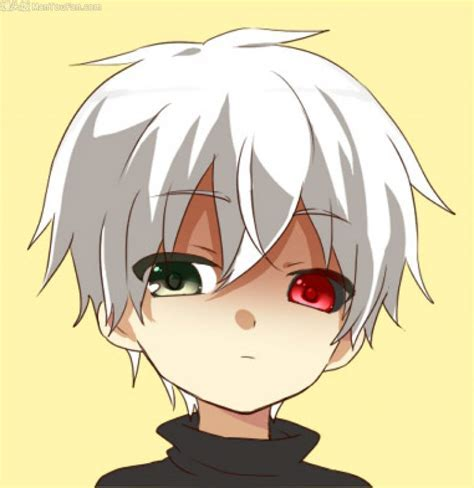
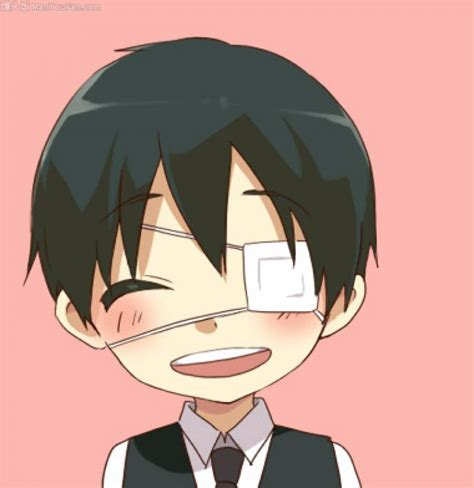
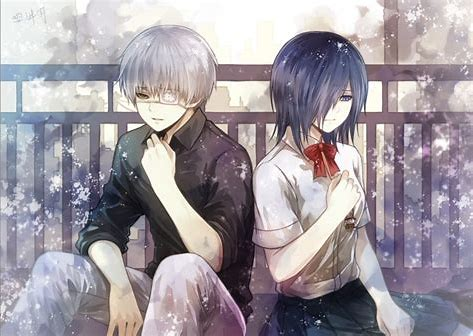

|  |  | 东京食尸鬼在纷乱嘈杂的现代化城市——东京，蔓延着一种吞食人类的怪物，人们称之为喰种。他们外表与人几乎没有差异，但却只以人类为食，是人类的天敌。那一日，金木研——上井大学的一名普通学生——遇上了某位神秘女子神代利世小姐（实为喰种），进而卷入了一场精心策划的事故。自此，被改造为半人半喰种，一度感到孤独无助的他却被“古董”咖啡店的喰种收留，但好景不长，喰种组织“青铜树”很快找到了他并被带走承受酷刑，最终明白“软弱即是罪恶”，并决意变强，从此走上了另一条路。每一个人都有一段故事 每一个人都有不得已 每一个人都有想守护的东西 没有绝对的坏人 也没有绝对的好人 |
|
|  |